This is my final project for Data Science on Unstructured Text Data course taken at Business Analytics department of Central European University in early 2018.
The purpose of this analysis is to compare news articles about Romania with those about Norway, by means of sentiment analysis over time and by news section categories, using tidytext [https://www.tidytextmining.com/] mining and R [https://www.r-project.org/].
Why these two countries? I was born and raised in Romania, Hungary’s lovely neighbour country and I was curious to see what kind of news are being written / reported about it abroad. Performing sentiment analysis on these texts (and having certain ideas about the expected output) gave me the idea of comparing it with another country. Since Romania is not famous for its prosperity, lack of corruption and overly satisfied people, I thought that best comparison would be with the happiest country in the world, as per 2017’s Happiness Index [http://worldhappiness.report/]

(Trolltunga in Norway, https://www.theguardian.com/travel/2015/jul/25/norway-hiking-walking-affordable-bus-stavanger )
My source of data is the The Guardian British daily newspaper which has a very convenient API [http://open-platform.theguardian.com/] and a rich source of articles for these two European countries.
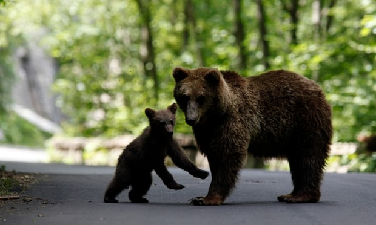
(Bears in Romania, https://www.theguardian.com/environment/2016/oct/05/romania-bans-trophy-hunting-of-brown-bears-wolves-lynx-and-wild-cats )
Below I perform various analysis of articles. The Happiness Report for 2017 was compiled based mostly on surveys over years 2014-2016. There is a very nice OLS regression used for explaining average happiness accross countries [https://s3.amazonaws.com/happiness-report/2017/HR17.pdf, Table 2.1]. Since this report is gaining importance (I believe it impacts level of FDIs, national policy making, life choices and nationals’ self-esteem), I was curious to see if there is any correlation between what’s the overall opinion / sentiment about a country- as seen with external eyes (i.e. not national news) and the relative ranking of a country, so comparing the number one country with an averagely ranked oned (Romania landed on 57th position out of 155 countries) seemed feasible.
In my analysis I decided to focus on 2013-2016 articles as I assumed that 2013 reported events probably influenced 2014 survey answers. I downloaded via the Guardian API all articles that had Romania, Ceausescu, Bucharest, Norway, Norwegian or Oslo in their webTitle (i.e. article headline) field (thus those that most probably refer to these countries). Following some cleaning this led me to work with 141 articles about Romania and 215 news articles about Norway, all published between 2013 & 2016.
TF- IDF analysis of articles about Romania and Norway
TF-IDF stands for term frequency-inverse document frequency and the product of these two for each word gives us how frequent this word is in a document, multiplied by how unique the word is within the entire corpus of documents. I grouped the articles into a collection of documents based on the sectionName (the news category).
Below we can get some clues about the content of the news sections (for all the years).
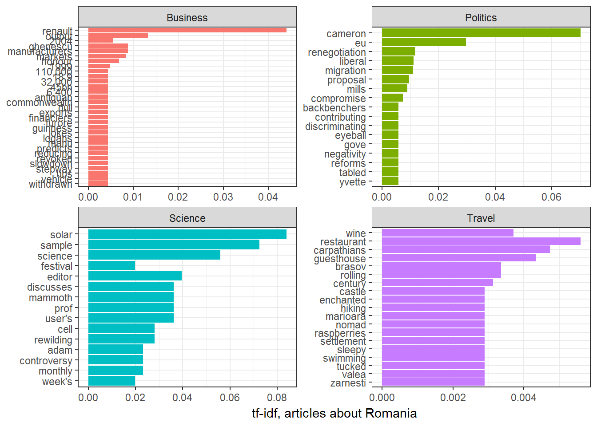
We can get an idea about the most important subjects. For Romania, most frequent Business topics are about the Renault car manufacturer (important player on the market) and Romanian business people. For Politics most of the topics are related to british politics (and impact of policies on Romanians), not surprising, given the origin of the newspaper. For science we don’t get a lot of info (most frequent is solar, since Romania has started to adopt solar energy). For Travel however I find this particularly useful: many of the words are important sights and tourism options in Romania, I find it interesting that based on few lines of code analyzing a few news articles, one can get an idea of what’s a trendy destination in a country.
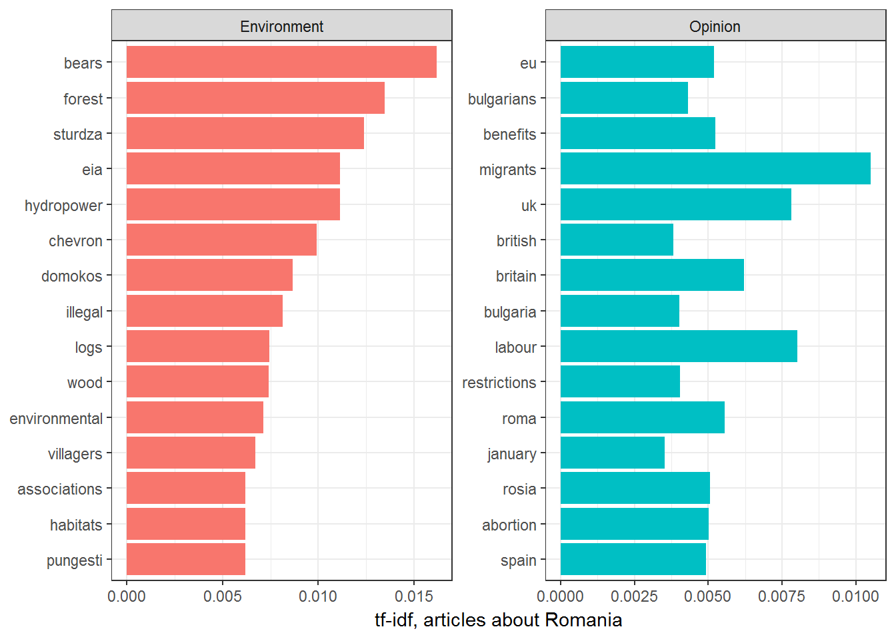
For articles under Environment section, we see that bears and forests are particularly important. Many bears live indeed in the Romanian forests, and both bears and illegal logging has caused many controversy in the past years. The third most frequent word (Sturdza) is the name of a noble business man involved in the scandal. EIA is the Environmental Investigation Agency and hydropower energy topic was also surrounded by a corruption scandal. In the Opinions section we get a hint to the fact that articles often discuss Romania’s EU membership and widely compare it to Bulgaria (its neighboring country that joined EU in the same period). No surprise, many articles are related to Great Britain (actually it made me think if news about UK compared with Romania should be excluded or not). Roma related topics are also frequent; so are articles about migrants leaving in Spain, and the rosia term is related to the infamous gold and silver mining project that caused (and still causes) a lot of controversy.
This TF-IDF analysis confirms me that the articles are indeed well-known, very specific to Romania and cover controversial topics (with limited journalist bias), so analyzing them at a sentiment level would be interesting.
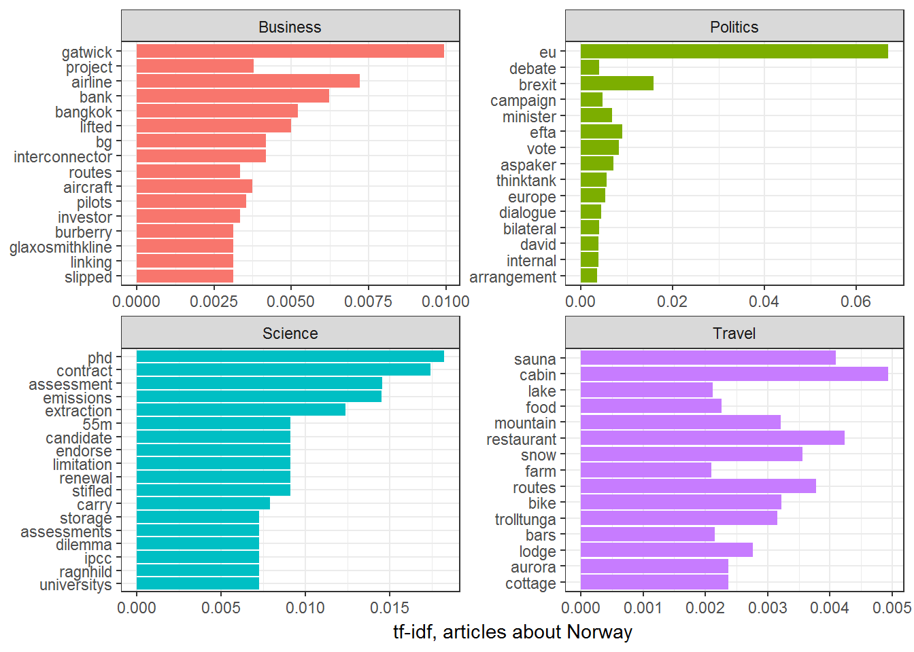
For Norway the above plots give us an idea about the most important terms in years 2013-2016 for various news sections. For Business we see that airtravel business dominates, but might be due also to the fact that I filtered on Norwegian as news headline when downloading articles, which is an airline itself. For Science I get the feeling from gazing at the words that there’s a lot of research/ academic work going on; for POlitics again articles seem to be messing with British politics and the Travel section gives me an idea about tourism in Norway (given its climate and location, no surprises; while analyzing the funny lower-cased term trollltunga made me add this famous rock formation to my bucket list [https://en.wikipedia.org/wiki/Trolltunga]
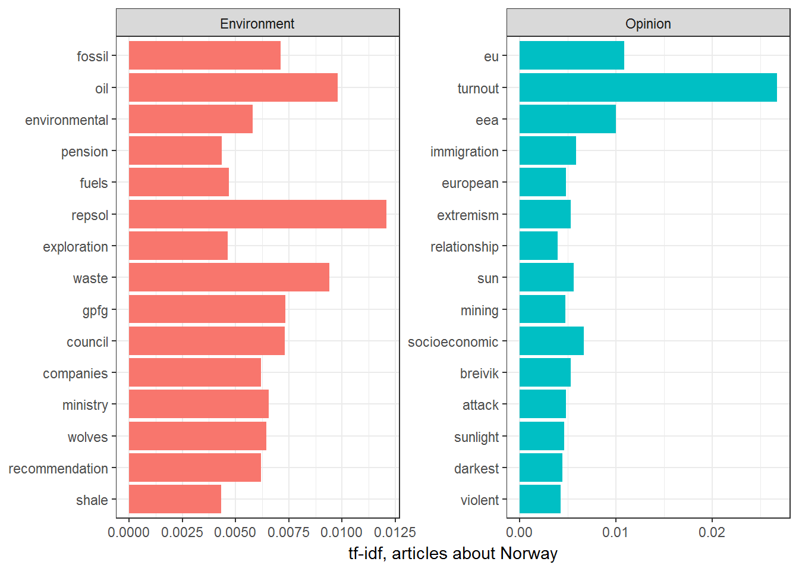
For Environment, many articles covered the energy topic (fossil, oil); while the Opinions section gives us a hint that EU is a frequent subject (Norway not being its member), while the interesting amount of sunlight is also frequently mentioned. More will be said about breivik and attack later.
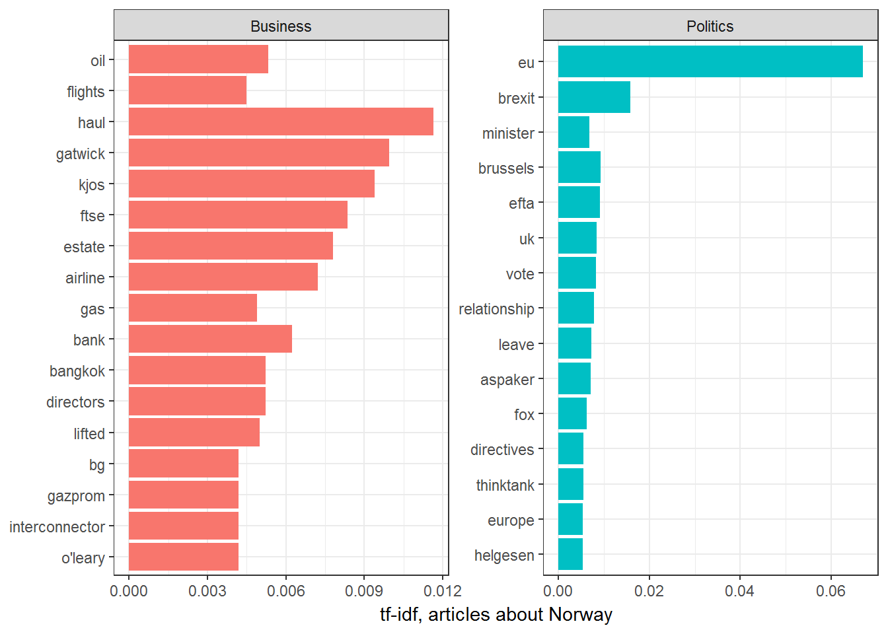
Bi-grams
Bi-grams are useful in examining pairs of two consecutive words.
## # A tibble: 18,934 x 2
## bigram n
## * <chr> <int>
## 1 world cup 74
## 2 prime minister 45
## 3 euro 2016 34
## 4 northern ireland 27
## 5 min romania 24
## 6 1 january 21
## 7 free kick 18
## 8 romanian government 16
## 9 eastern europe 15
## 10 victor ponta 14
## # ... with 18,924 more rowsThey don’t tell us much visualized this way.
Using bigrams to provide context in sentiment analysis
Often sentiment-associated words preceded by negating words can result in misleading analysis, so we can analyze these separately by using their AFINN sentiment lexicon based score (its mathematical sign indicating the direction of the sentiment).
We can pick the most common words that negate the subsequent terms, we can multiply their score by the number of times they appear (so that a word with a score of +3 occurring 10 times has as much impact as a word with a sentiment score of +1 occurring 30 times, as per the tidytext book) and examine all of them at once.
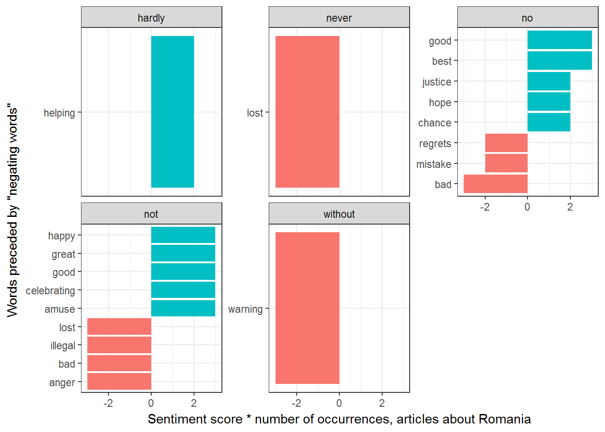
As we can see, some bigrams were misidentified as positive, making the text mentioning Romania seem more positive than they really were.
Bi-grams for articles about Norway
For Norway we have even more terms misleadingly classified.
## # A tibble: 25,840 x 2
## bigram n
## * <chr> <int>
## 1 world cup 53
## 2 single market 51
## 3 human rights 44
## 4 prime minister 37
## 5 norwegian government 34
## 6 pension fund 30
## 7 climate change 28
## 8 wealth fund 26
## 9 fossil fuel 23
## 10 fossil fuels 23
## # ... with 25,830 more rows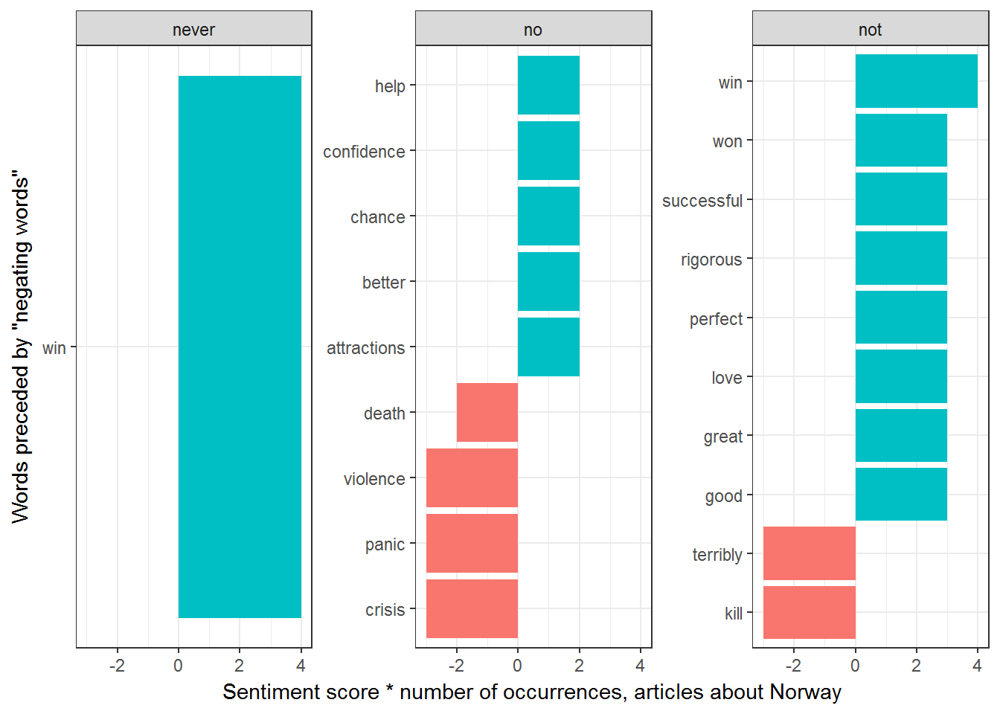
For bi-grams we can create a graphical network of words where the most frequent regular pairs have a central location.
Let’s visualize the most frequent bigrams for articles about Romania from “World news” and “Opinion” sections.
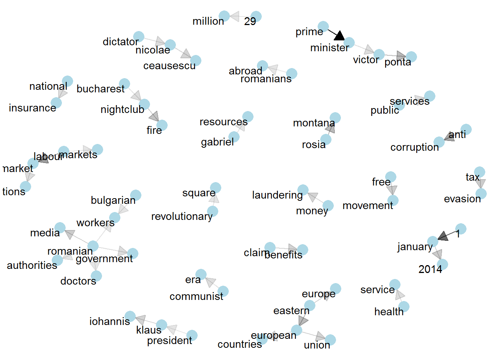
Sadly, the most frequent ones do not seem to be extremly happy word associations. One familiar with Romanian history and reality can recognize most of the key bigrams used often in articles, that are indeed somewhat reflective of current carpathic society: anti-corruption efforts, tax-evasion and money-laundering, ex-dictator Ceausescu and his communist era still often mentioned (along with the world ‘revolutionary’ related to his elimination), health service is still a recurring topic. Sadly the ‘nightclub fire’ (a tragic event in 2015 which 64 young people died causing major political turmoil) also hit the news. Mass protests over the corruption linked to the fire led to the resignation of the Prime Minister of Romania, Victor Ponta, whose name can also be visualized above.
Bi-grams in World news and Opinion section of articles about Norway.
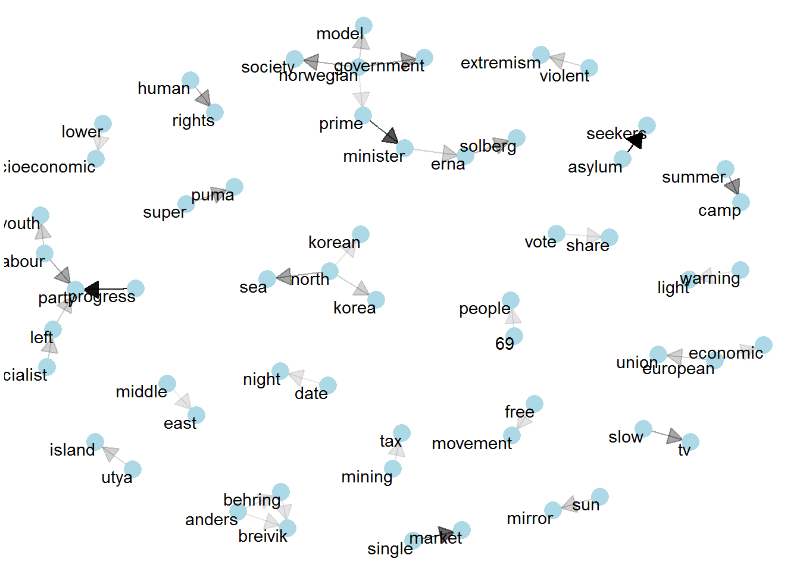
Regarding articles about Norway, there seem to be two dominant topics (derived from most frequent bigrams) over the years, one is related to migration (as many asylum seekers from the middle east entered the country in the covered period, hoping for a better life, since it’s considered a model society ). The other topic is related to the terrorist attack commited in 2011 by Anders Behring Breivik which included the death of 69 people on the Utya island. As sad as these events are, these terms are mostly related to same subjects, while for Romania, as we’ve seen, most bigrams suggested negativity on many more levels.
** Sentiment analysis**
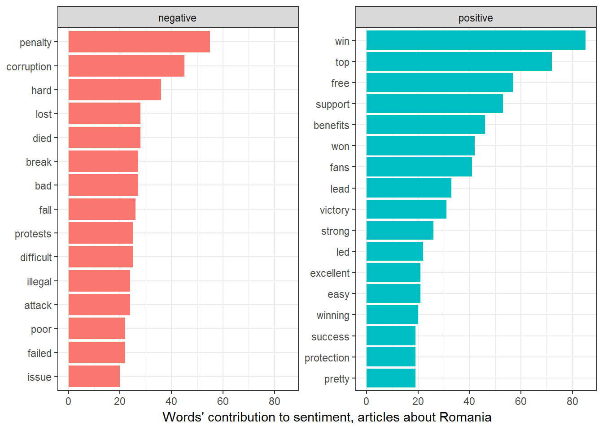
Both number 1 negative and positive words, penalty and win come from sports related topics (sections Football and Sports). The rest of the top words do tell a lot to one familiar with current Romanian events. The positive ones seem to be related to sport events (won, fans, lead, victory, support, winning) so even though they out-weight the negative ones, I do miss seeing some happy words that can’t be associated with sports.
The very negative words are unfortunately mostly associated with the aforementioned 2015 nightclub fire (corruption, hard, lost, died, protests, illegal, failed*), which does say a lot about our troubled, but sporty nation.
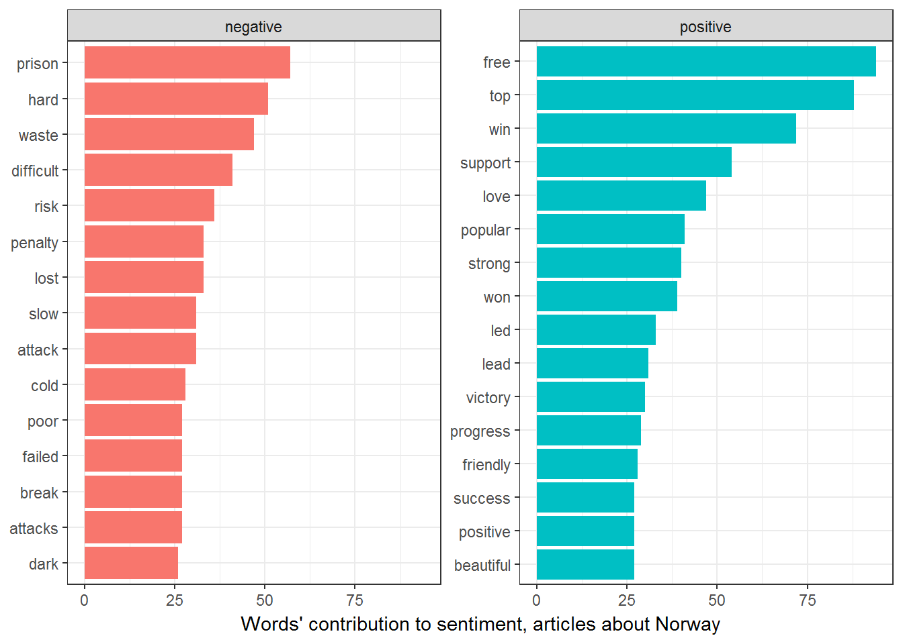
For Norway the most frequent negative words include cold and dark, which is not surprising, considering Norway’s coordinates. The positive words do not seem to be necessarily associated with sports, as if was the case for Romania. Love, strong, progress, friendly and beautiful do make a country more appealing.
Interestingly, top 1 words here are opposites: most negative is prison (and highly likely associated with articles discussing the controversial prison life of Breivik, following his terrorist attack), while free earns its first spot, but free might be coming from positive articles praising what a free and lovely country Norway is, or from articles discussing if the previously mentioned monster might be set free?
So let’s dig deeper into the context:
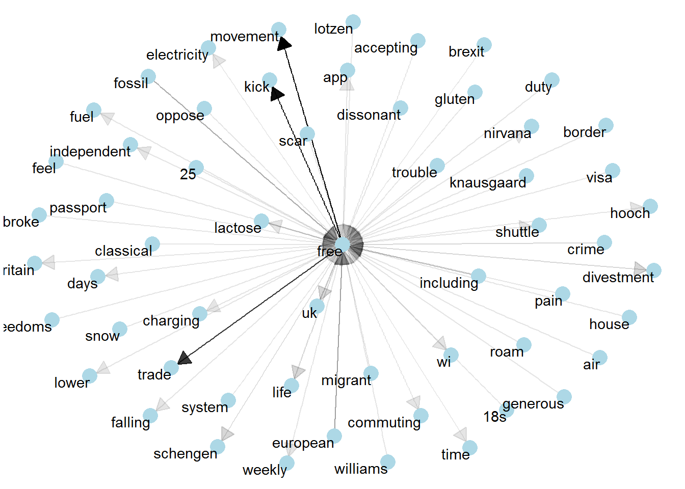
We can see that free is used in variety of contexts, and mostly in neutral way (crime free, free time, trouble free, classical free [trade], gluten free).
Let’s have a look at the change in sentiment over time, based on articles mentioning these countries. The analysis is done based on the Bing lexicon. We first find a sentiment score for each word, then we count up positive and negative words on a yearly basis at article category level, then separate sentiments into negative and positive sentiment columns so that lastly we can obtain a net sentiment (positive - negative).
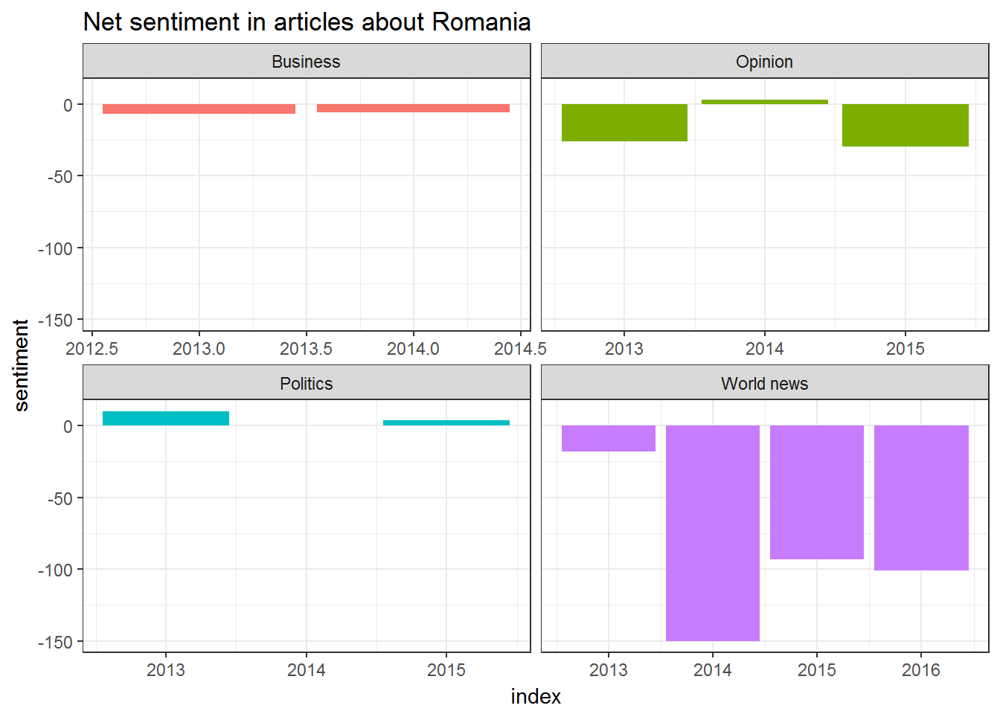
From above it emerges that the net sentiment is mostly negative and deepens in time. Actually most articles are in the World news section and, as we can see, they have net negative value in each year, the max being 2014.
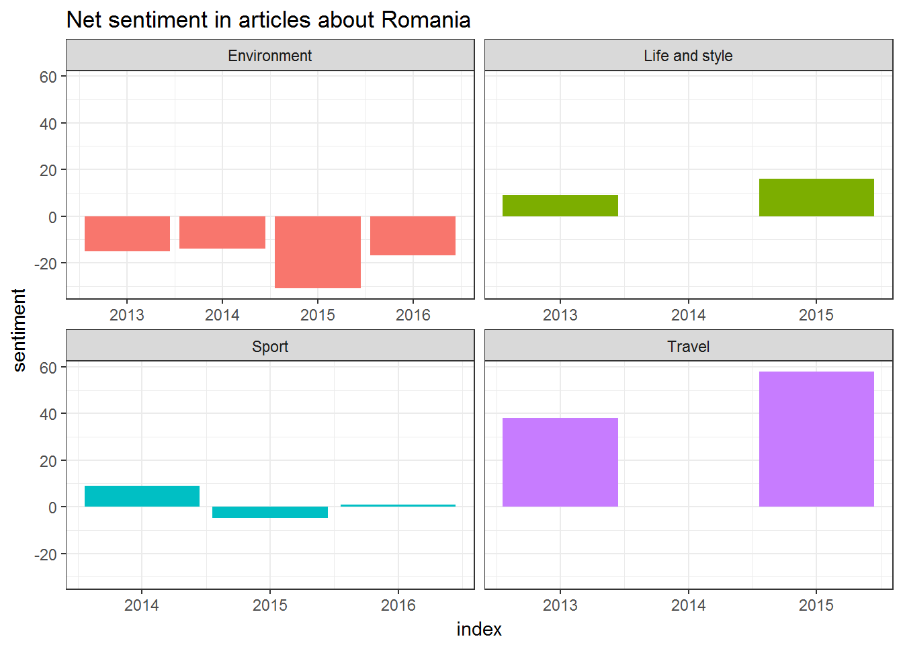
For the other categories we have mixed net sentiment. Namely, for Environment, 2015 seemed to be a very negative year, and it’s due to a major logging-related forest scandal (with 2 very negative articles about it), and consistently negative sentiment in press throughout the years. For Travel on the other hand, the net sentiment is positive, and it’s due to articles published about Romanian travel sites, 1 in 2013 and 4 in 2015 (maybe to compensate lack of travel related articles in 2014). Cities articles cover similar aspects. Sport articles’ net sentiment varies yearly, as does the performance on Romanian sport teams.
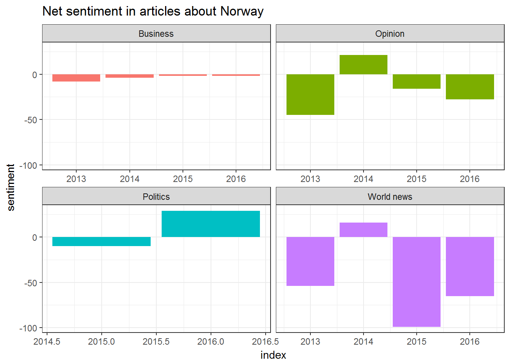
Interestingly in terms of politics Norway seems to have been praised in 2016 by Guardian’s journalists, having a positive net sentiment. More striking is the World news section, where we have huge change in net sentiment, especially in 2015 vs. 2014. It’s mostly due to articles discussing the 2011 terrorist attacks (as in 2015 there were some new developments regarding Breivik’s case), including the article “Utya four years on: what’s the mood in Norway?”, which explain it.
Norway does not seem to be such a happy country after all - based on Guardian articles on certain topics in a certain period!
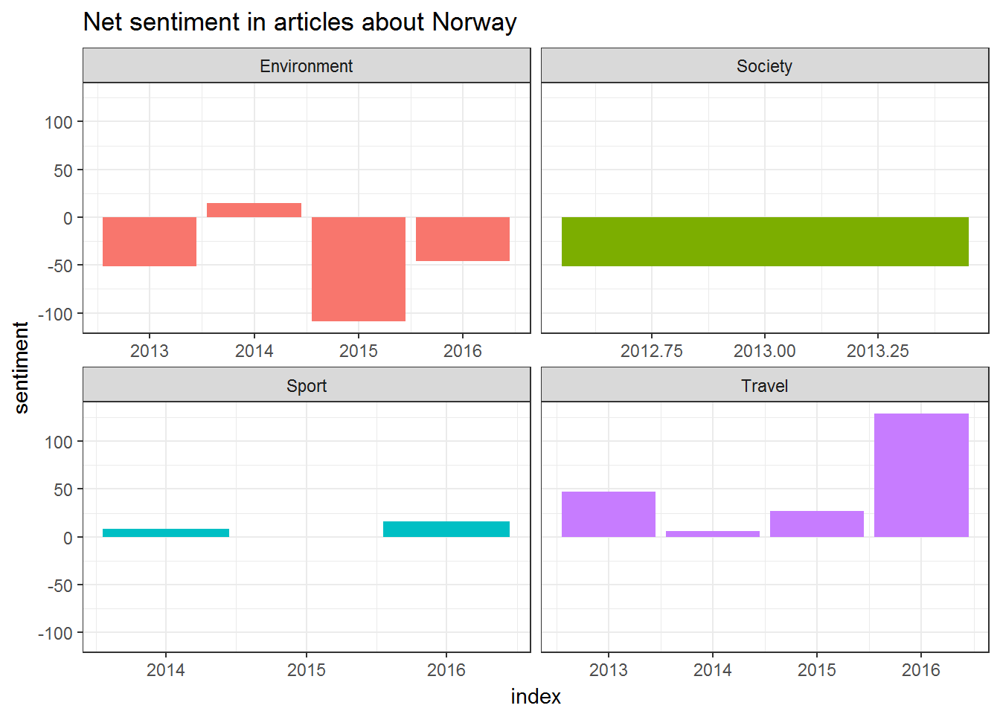
The Environment related articles are net negative, although the country is known for its serene, pristine, well-preserved nature. Well many of the articles discuss artic oil exploration lawsuits, green energy challenges and other matters which are mosly opinions hard to be objectively analyzed at a sentiment level.
No Life and style articles about Norway, but a few under Society section, showing a constant net negative sentiment (although it’s given by two articles about Prison life in Norway where ‘inmates are treated as people’, so the net sentiment is questionable).
Compared to Romania, Norway has very few articles written about its Sport life; the Travel section does seem to be filled with net positive articles.
Conclusion
My initial idea was to try to assess with text analysis the external (british press) perspective regarding ‘happiness’ level of my home country (which ranks average in the 2017 Happiness report) versus the worlds happiest one- Norway. I was eager to see if there’s any correlation in terms of written material generated in various newspaper sections and these countries’ relative ranking (not implying any causation).
Based on the above net sentiment analysis of written media, I am surprised to see that Norway does not emerge as an extremely happy country. Need to highlight though, that their happiness seems to be shadowed by the 2011 terrorist attack that shook the entire country and remains a sensitive current topic, and most negativity from press is mostly associated with this event which is not definitory (based on official happiness ranking) for the Norwegian society / politics / environment.
Unfortunately in case of articles about Romania, overall there seem to be many more negative topics - ranging from corruption to environmental issues, bad policies, etc. The most positive words seems to be related to sports, which is not necessarily going to help the country improve its relative ranking in the near future…
The Happiness Report uses structured data for their regression (economic data, surveysm etc.) in compiling this ranking. I can imagine considering some happiness indicators based also on unstructured data (tweets, comments, blog posts, etc.) which can help better assess how a citizen feels about its country… The texts analyzed above are extremely limited both in size and obviously subject to the specific language used by certain britih journalists, however, I think that they can serve as an example in how sentiment analysis can help understand opinions about a potential destination. Maybe at one point citizen happiness level could be more easily assessed via unstructured data, with the help of similar cool tools.